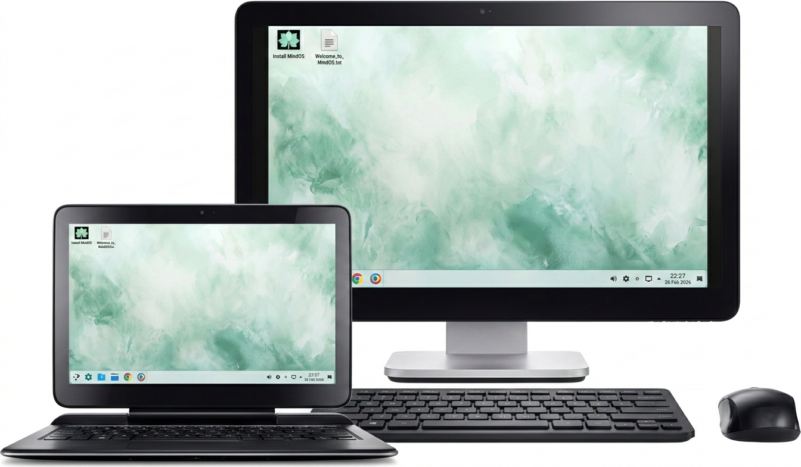

Şifresiz terminal, sihirli kısayollar ve kaya gibi sağlam bir temel. MindOS, bilgisayarınızı tam potansiyeliyle kullanmanız için baştan aşağı optimize edildi.
Kaya gibi sağlam Debian 12 tabanı. Günlük kullanım, yazılım geliştirme ve stabilite arayanlar için kusursuz seçim.
(GELİŞTİRİLME AŞAMASINDA)En güncel KDE Plasma deneyimi. Performans, estetik ve donanım gücünü en üst seviyede yaşamak isteyenler için.
Neon İndirLinux kurmak hiç bu kadar basit olmamıştı. Dünyanın en kullanıcı dostu kurulum aracı Calamares sayesinde, MindOS'u sadece birkaç tıklamayla dakikalar içinde diskinize kurabilirsiniz.
(Slop)dows'tan vazgeçemiyor musunuz? Hiç sorun değil. Kurulum esnasında "(Slop)dows Boot Manager'ın yanına kur" seçeneğini seçin. Veri kaybı riski olmadan özgürlüğü yaşayın.
Debian'ın ağır yüklerinden arındırılmış, milisaniyeler içinde tepki veren bir çekirdek yapısı.
Görsel her detayı mühürlenmemiş bir tuval gibi düşünün. Temalar ve ikonlar tamamen emrinizde.
D12 ile XFCE'nin sadeliği ve GNOME'un modernliği arasında saniyeler içinde geçiş yapın.
Steam, Lutris ve Heroic ile (Slop)dows oyunlarını performans kaybı yaşamadan açın.
Docker, Git ve VS Code için optimize edilmiş, sizi yarı yolda bırakmayan stabil ortam.
Karmaşık Linux dünyasını unutun. Web'de gezin, film izle ve ofis işlerini tek tıkla hallet.
Dizüstü, masaüstü ve 2'si 1 arada cihazlarınızda kusursuz uyum. Dokunmatik ekran desteği hazır.

MindOS'a özel olarak mühürlenmiş kısayollarla (alias) sisteminize en hızlı şekilde hükmedin.
Hayır, MindOS tamamen açık kaynaklı ve ücretsiz bir topluluk projesidir.
Evet, Calamares ile yan yana kurulum yaparak sistemlerinizi bağımsız kullanabilirsiniz.